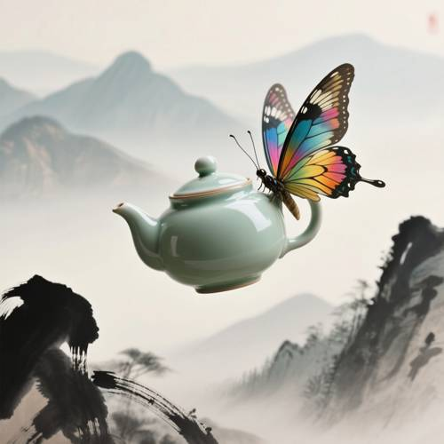
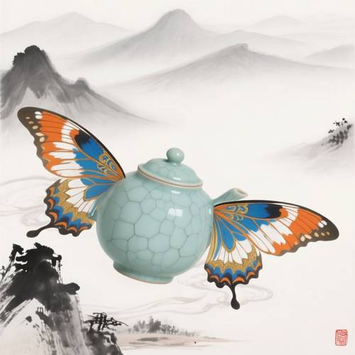
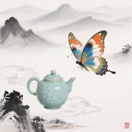

Style — A celadon teapot grows colorful butterfly wings and flies among the ha
A celadon teapot grows colorful butterfly wings and flies among the hazy distant mountains. It has a strong national style and ink painting style.

Direct — one call, no iteration

Continuum — Kimi K3 + Qwen-Image
Judge — Direct
PASSStyle — The image exhibits a strong national and ink painting style. The background features hazy, distant mountains rendered with black ink-like brushstrokes, characteristic of traditional Chinese ink wash painting. The foreground also includes elements like rocks and trees created with similar bold, black strokes. The central object is a celadon teapot, a classic element of Chinese culture, which reinforces the 'national style'.
FAILCompound - Imagination — The image depicts a celadon teapot floating in the air. A separate, complete butterfly with colorful wings is perched on the handle of the teapot. The image does not show butterfly wings growing directly from the teapot itself as the prompt specifies. Instead, it shows a combination of a flying teapot and a butterfly resting on it.
Judge — Continuum
PASSStyle — The image is rendered in a traditional Chinese ink painting style. This is evident in the hazy, layered mountains in the background, the use of black ink washes with varying tones, the calligraphic brushstrokes on the foreground rocks and trees, and the presence of a red seal stamp in the bottom right corner. These elements collectively create a strong national style.
PASSCompound - Imagination — The image features a central subject that is a combination of a teapot and a butterfly. A light green, crackle-glazed teapot, consistent with celadon ware, has a pair of large, colorful butterfly wings attached to its sides. The wings are patterned with orange, blue, white, black, and gold. The entire composite object is depicted in mid-air, giving the impression that it is flying.
What the agent did
Thinking
The user wants an image: "A celadon teapot grows colorful butterfly wings and flies among the hazy distant mountains. It has a strong national style and ink painting style." This is a creative, artistic prompt — Chinese national style (国风), ink painting style (水墨画), celadon (青瓷) teapot with colorful butterfly wings flying among misty distant mountains. Per the benchmark policy, I should: 1. Use qwen-image for generation 2. Generate, inspect, edit iteratively 3. Mark best as I go Let me craft a good prompt. Visual details: - Celadon teapot: pale greenish-blue porcelain, glossy glaze, elegant curved spout and handle, classic Chinese shape (maybe like a Yixing style but porcelain, or a classic round pot) - Colorful butterfly wings: large, vibrant wings attached to the teapot — maybe with patterns - Flying among hazy distant mountains: layered misty mountains fading into distance (typical Chinese shan shui painting) - Ink painting style: wash painting, ink strokes, negative space, maybe subtle paper texture, muted tones with the celadon and butterfly colors as accents - National style: Chinese aesthetic, maybe seal stamp red accent, clouds/mist Qwen-image is good with text but we don't need text. Let me write a detailed prompt. Prompt: "Traditional Chinese ink wash painting (guohua) style: an elegant celadon porcelain teapot with a pale blue-green glaze has grown a pair of large colorful butterfly wings and flies gracefully among hazy layered distant mountains. The wings are vibrant — orange, blue, and gold patterns like a real butterfly — contrasting with the soft gray ink-wash mountain silhouettes fading into mist. Soft white clouds drift around the teapot, delicate ink brush strokes, generous white negative space, subtle rice-paper texture, muted ink tones with the celadon and wings as the only color accents, serene poetic atmosphere, classical Chinese shan shui composition." Let me generate with qwen-image. The image size — default 1024x1024? For a landscape with mountains, maybe wider would be nicer, but the policy says "Do not try to widen the frame. The image size is fixed for comparison" — that's about edits. For generation, I can set width/height. Hmm, "Do not set a seed. Sizes and seeds are controlled by the harness." So I should leave width/height defaults too. OK, default 1024x1024. Let me generate.
Model
I'll create this ink-wash style image of a winged celadon teapot. Let me start with a generation using qwen-image.
Step 1 — `generate_image`
{
"prompt": "Traditional Chinese ink wash painting (guohua), shan shui style: an elegant celadon porcelain teapot with a pale blue-green crackled glaze has grown a pair of large colorful butterfly wings and flies gracefully through the air among hazy layered distant mountains. The butterfly wings are vivid and ornate \u2014 orange, sapphire blue, gold and white patterns with delicate veins \u2014 spread wide as if mid-flap. Behind it, soft gray ink-wash mountain silhouettes fade layer after layer into white mist. Wisps of clouds drift around the teapot. Delicate expressive ink brush strokes, generous white negative space, subtle rice paper texture, muted monochrome ink tones with the celadon glaze and the colorful wings as the only splashes of color, a small red seal stamp accent in the corner, serene poetic atmosphere, classic national style Chinese painting composition.",
"model": "qwen-image"
}
Result img_0

Thinking
The image is nice in style — ink wash mountains, celadon teapot, red seal, misty clouds. However, the key issue: the teapot and the butterfly are two separate entities. The prompt asks for a teapot that GROWS butterfly wings — i.e., the wings should be attached to the teapot, making the teapot itself fly. Right now there's a separate butterfly flying next to the teapot. I need to edit: attach the colorful butterfly wings to the teapot itself, replacing the separate butterfly. The wings should grow from the teapot's body/sides. Let me use edit_image with qwen-image, describing the change: "attach the colorful butterfly wings directly to the celadon teapot's body so the teapot itself is flying; remove the separate butterfly creature" — per rules, describe the fill for removal: the butterfly body should be replaced by wings growing from the teapot. Edit prompt: "Make the colorful butterfly wings grow directly out of the celadon teapot's body — one wing on each side of the pot — so the teapot itself is flying. Remove the separate black butterfly body, head, and antennae; the wings attach to the teapot's sides."
Model
The style is right — ink-wash mountains, celadon glaze, red seal. But the key element is wrong: the teapot and butterfly are two separate objects. The wings need to grow from the teapot itself. Let me fix that.
Step 2 — `edit_image`
{
"image": "img_0",
"prompt": "Make the large colorful butterfly wings grow directly out of the celadon teapot's body \u2014 one wing attached to each side of the pot \u2014 so the teapot itself is flying through the air. Remove the separate black butterfly body, head and antennae entirely; the orange-blue-gold wings now sprout from the teapot's sides as its own wings.",
"model": null
}
Result img_1
Thinking
Now the teapot has colorful butterfly wings growing from its sides and is flying among hazy ink-wash mountains. The style is strong — ink painting mountains, mist, red seal stamp, celadon crackled glaze. Let me evaluate: - Celadon teapot ✓ (pale blue-green, crackled glaze) - Colorful butterfly wings growing from teapot ✓ (one wing each side, vibrant orange/blue/gold) - Flying among hazy distant mountains ✓ (layered misty ink mountains) - National style / ink painting style ✓ (guohua look, red seal, mist, ink strokes) Issues to consider: 1. The teapot appears to have lost its handle — wait, looking again: the wings attach where handle/spout would be. The spout seems visible near the right wing root (small pale protrusion). The handle is hidden behind the left wing. Actually looking at the image, the teapot has a lid and knob, but I can barely see the spout — there's a small protrusion at the right. The handle isn't visible. That's a minor issue — it's still clearly a teapot. Actually, a teapot without visible spout/handle may read as a jar/pot. Let me look more carefully. On the right side at the wing root there's a pale spout-like shape. It's acceptable but could be improved. 2. The overall composition is good, misty mountains, clouds at bottom left, red seal at bottom right. The prompt says the teapot "flies among the hazy distant mountains" — it's centered and large. That's fine. Should I try to improve the spout/handle visibility? It might be a nice touch, but the risk is destabilizing a good result. The result is quite good. Per policy: "Good enough is a stop condition." The image matches all elements. I think the teapot reads as a teapot — it has a lid with a knob, classic round body. The wings attach at the sides where handle/spout would be. Let me mark this as best. Actually, let me first double-check details with a quick look — the image is presented at 1024-ish and looks clean. I think this is done. Mark best and stop. Actually, one consideration: the prompt emphasizes "strong national style and ink painting style" — the teapot itself is rendered in a fairly realistic glossy 3D-ish porcelain style rather than ink-brush style. But that contrast is actually typical of gongbi (fine brushwork) within ink painting, and it looks good. The overall painting reads clearly as Chinese ink painting with color accents. I'm satisfied. Mark best img_1 and stop.
Model
The edit worked well. Let me verify the details up close before finalizing.
The close-up shows the celadon teapot with beautiful crackled glaze (ge kiln style ice-crackle pattern), the spout visible on the right, and wings attached at both sides. The lid with knob is clear. This reads clearly as a celadon teapot with butterfly wings. The detail quality is good. Everything the prompt asks for is present: - Celadon teapot ✓ - Colorful butterfly wings growing from it ✓ - Flying among hazy distant mountains ✓ - Strong national style / ink painting style ✓ (ink-wash mountains, mist, red seal) Mark img_1 as best and stop.
Model
The close-up confirms excellent quality — the crackled ge-kiln celadon glaze, lid with knob, visible spout, and wings cleanly attached to both sides of the pot. All requested elements are present and correct. Marking this as my best result.
Step 4 — `mark_best`
{
"image": "img_1",
"reason": "Celadon teapot with colorful butterfly wings growing from its sides, flying among hazy layered ink-wash mountains. Strong guohua/national style: misty shan shui peaks, cloud wisps, red seal stamp, crackled celadon glaze, vivid orange-blue-gold wings. All prompt elements present and correct."
}
Thinking
The image is complete and marked. Done. Let me give a brief summary to the user.
Model
Done! The final image captures everything the prompt asked for: - **Celadon teapot** — a pale blue-green porcelain pot with classic ge-kiln ice-crackle glaze, domed lid, and curved spout - **Colorful butterfly wings** — vivid orange, sapphire, gold, and white patterned wings growing directly from the teapot's sides, spread mid-flight (the first draft had a separate butterfly flying next to the pot, so I merged them into one flying creature) - **Hazy distant mountains** — layered shan shui peaks dissolving into white mist, with drifting cloud wisps around the pot - **National / ink painting style** — expressive ink-brush mountains, generous negative space, rice-paper texture, and a small red seal stamp in the corner, with the celadon and wings as the only splashes of color against the monochrome wash